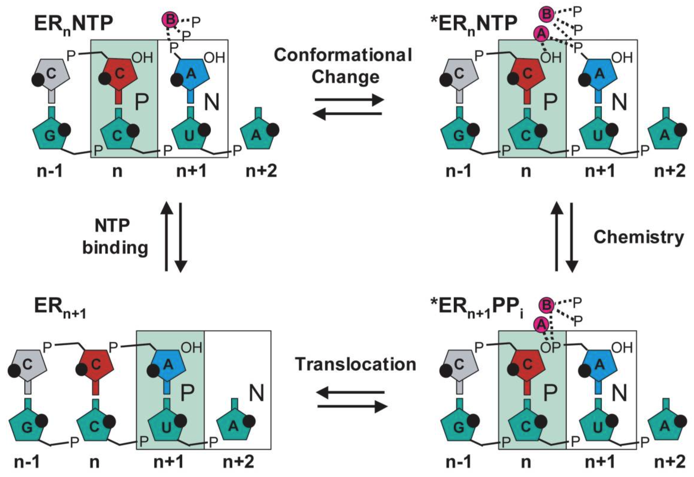
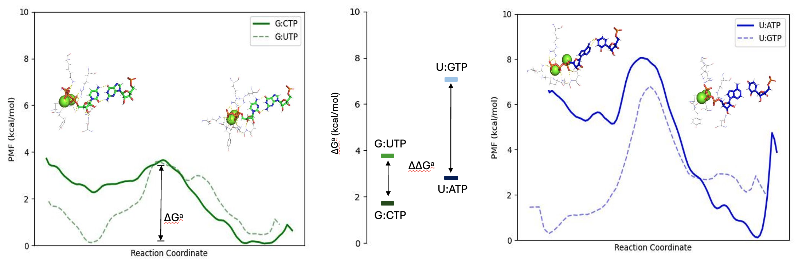

RNA-Dependent RNA Polymerase (RdRp)
Polymerase-focused context for replication fidelity, nucleotide selection, and mutation emergence.
RdRp Function and Fidelity
Nsp12 contains RNA-dependent RNA polymerase (RdRp) that is mainly responsible for the viral replication and transcription of the genome, alongside nsp 7 and nsp 8. The replication complex adopts the following kinetic steps for nucleotide incorporation. However, the RdRp is error prone and can incorporate wrong nucleotides and introduce mutations into the genome during replication.

Fig 1. The kinetic mechanism of nucleotide incorporation [1].
Selectivity Analysis with Molecular Dynamics
To understand the selectivity RdRp, molecular dynamics simulations can be used to simulate the rate-limiting nucleotide incorporation step upon nucleotide binding. The free energy profiles for cognate and non-cognate nucleotide incorporation in the presence of different templating bases can be generated to quantify the selection process.

Fig 2. The potentials of mean force (PMF) calculated for template guanine with cognate CTP and non-cognate UTP substres is shown on the left, compared with PMF calculated from previous work for template uracil with its cognate ATP and non-cognate GTP substrates shown on the right [2]. The insertion barrier values ΔGa are marked in the middle, and the differences in ΔGa values between two template systems are denoted by ΔΔGa.
Contributors
This work was contributed by:
- Shan Qi Yap
Link to the dedicated component page
The full RdRp sequence and interactive structure live on the Virus components page.
References
- [1] Ng, K. S., Arnold, J. J., and Cameron, C. E. (2008). Structure-Function Relationships Among RNA-Dependent RNA Polymerases. In: Paddison, P. J., Vogt, P. K. (eds) RNA Interference. Current Topics in Microbiology and Immunology, 320. Springer, Berlin, Heidelberg. DOI: 10.1007/978-3-540-75157-1_7
- [2] Romero, M. E., McElhenney, S. J., and Yu, J. (2024). Trapping a non-cognate nucleotide upon initial binding for replication fidelity control in SARS-CoV-2 RNA dependent RNA polymerase. Phys. Chem. Chem. Phys., 26, 1792-1808. DOI: 10.1039/D3CP04410F